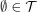
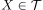
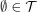
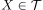

Topology generated by a basis
1. Proposition / Definition
 be a
be a  a
a  generated by
generated by 2. Proof
2.1. trivial sets in a topology
 is true by definition of the topology;  is true by definition of a basis.
2.2. Openness of a union of open sets
is true by definition
 is true by definition of the topology;  is true by definition of a basis.
is true by definition